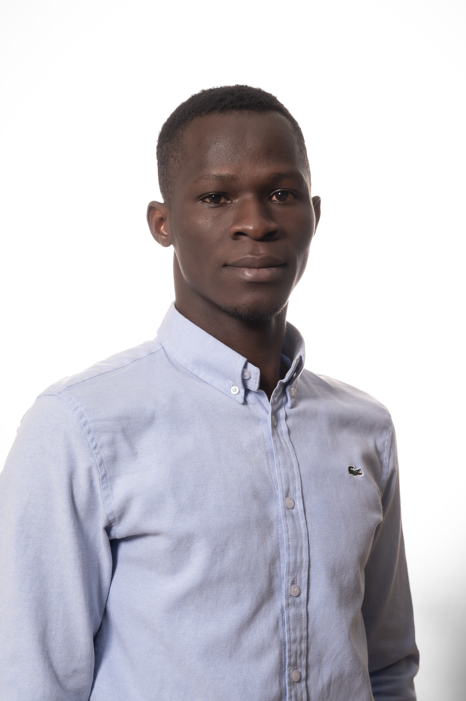

- Location
- Sherbrooke, Québec, Canada
- Field
- Climat, Energy and environmental economics
PhD candidate in Economics at the University of Sherbrooke, Quebec (Canada)
I am an economist specializing in energy economics and the adoption of low-carbon technologies. My research focuses on financial incentives that promote their deployment, as well as the integration of intermittent renewable energy sources and the functioning of electricity markets.
I hold a Master's degree in Economic Policy and Modelling (UAO Bouaké, Côte d'Ivoire, 2021) and a Master's degree in Energy Economics and Sustainable Development (UGA Grenoble, France, 2025). Through these programs, I have developed strong expertise in economic analysis applied to climate and energy issues.
My goal : to contribute to concrete and innovative solutions that accelerate the transition toward a low-carbon economy and address global energy challenges.